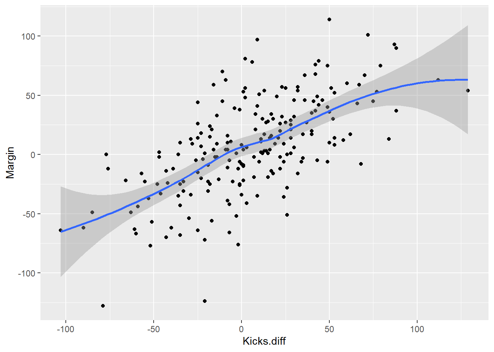
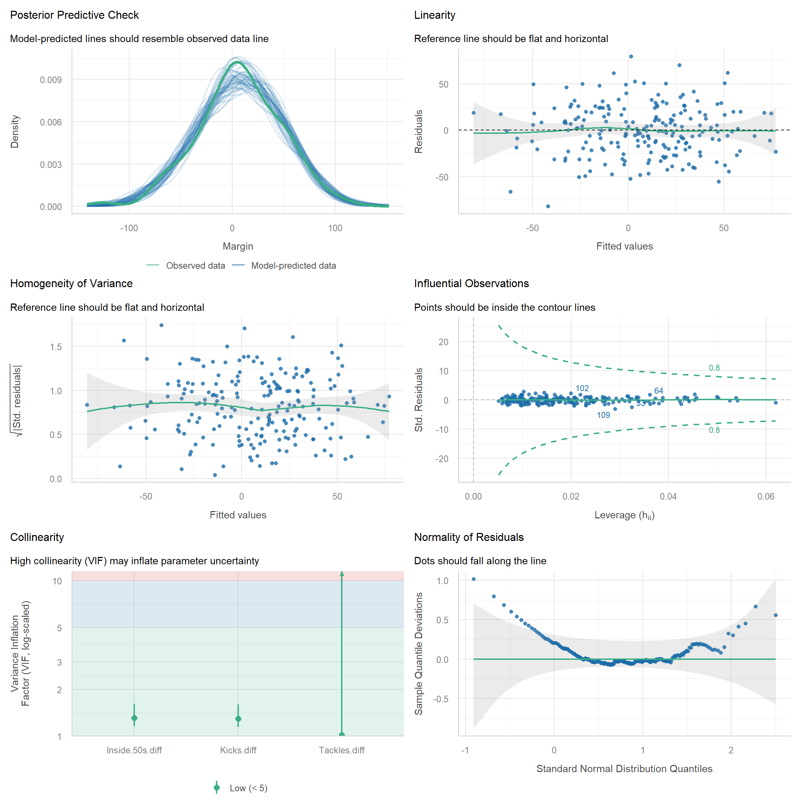
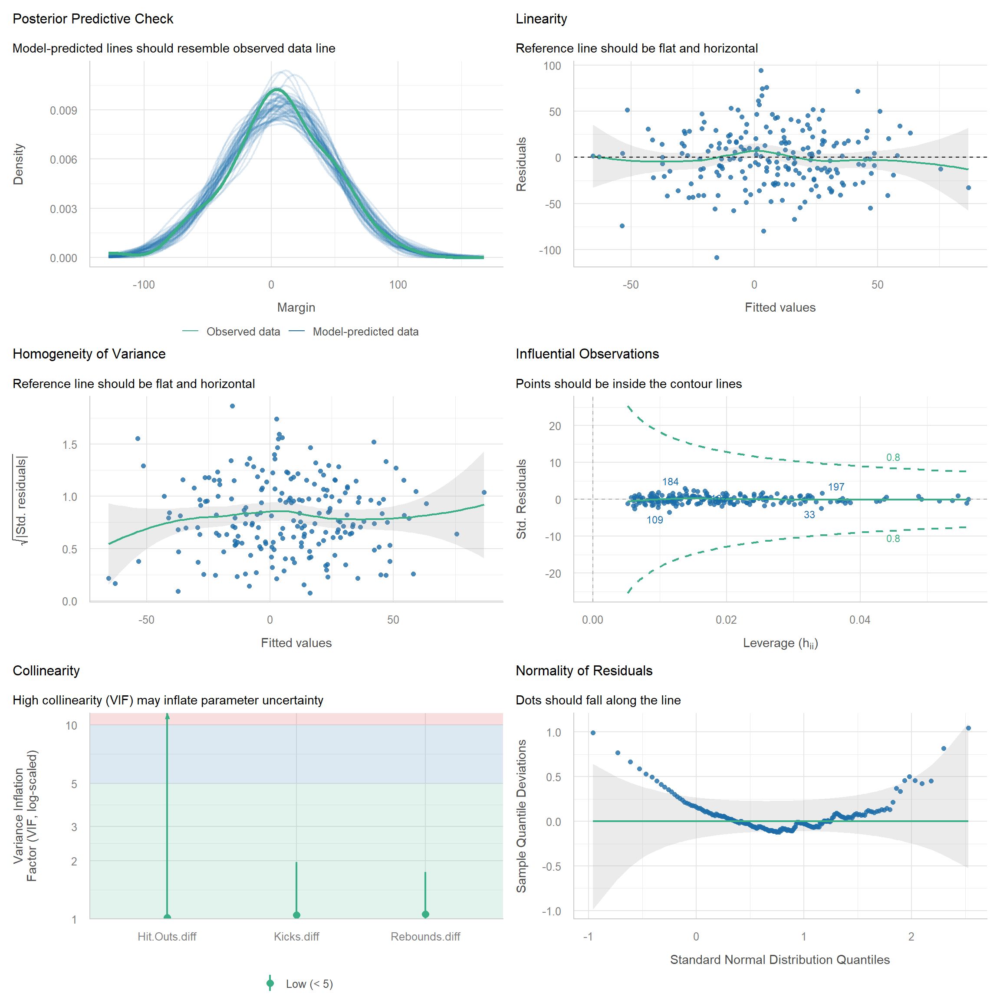
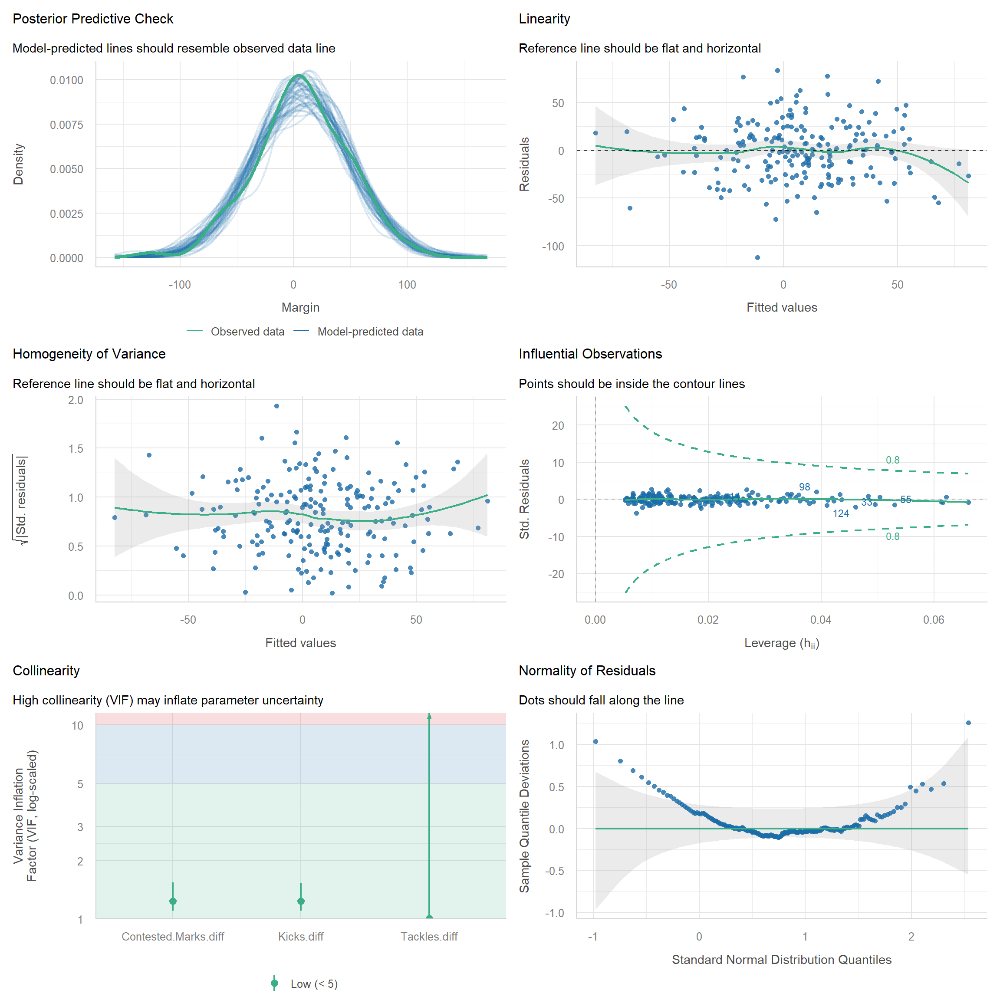
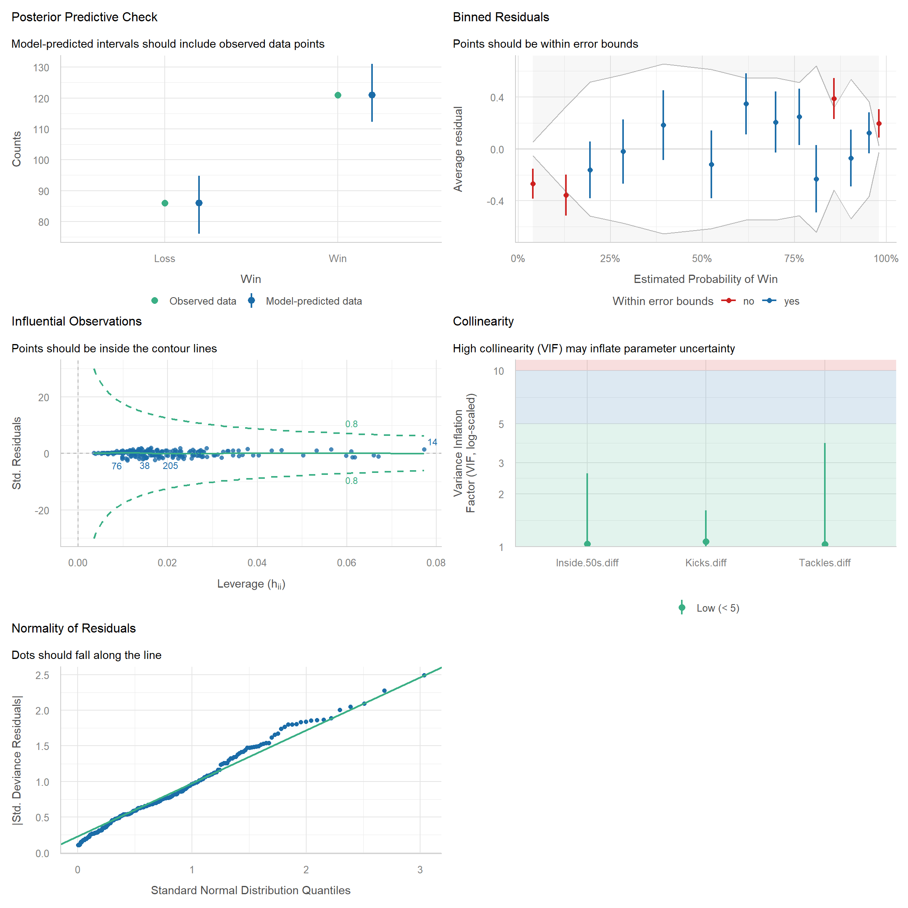
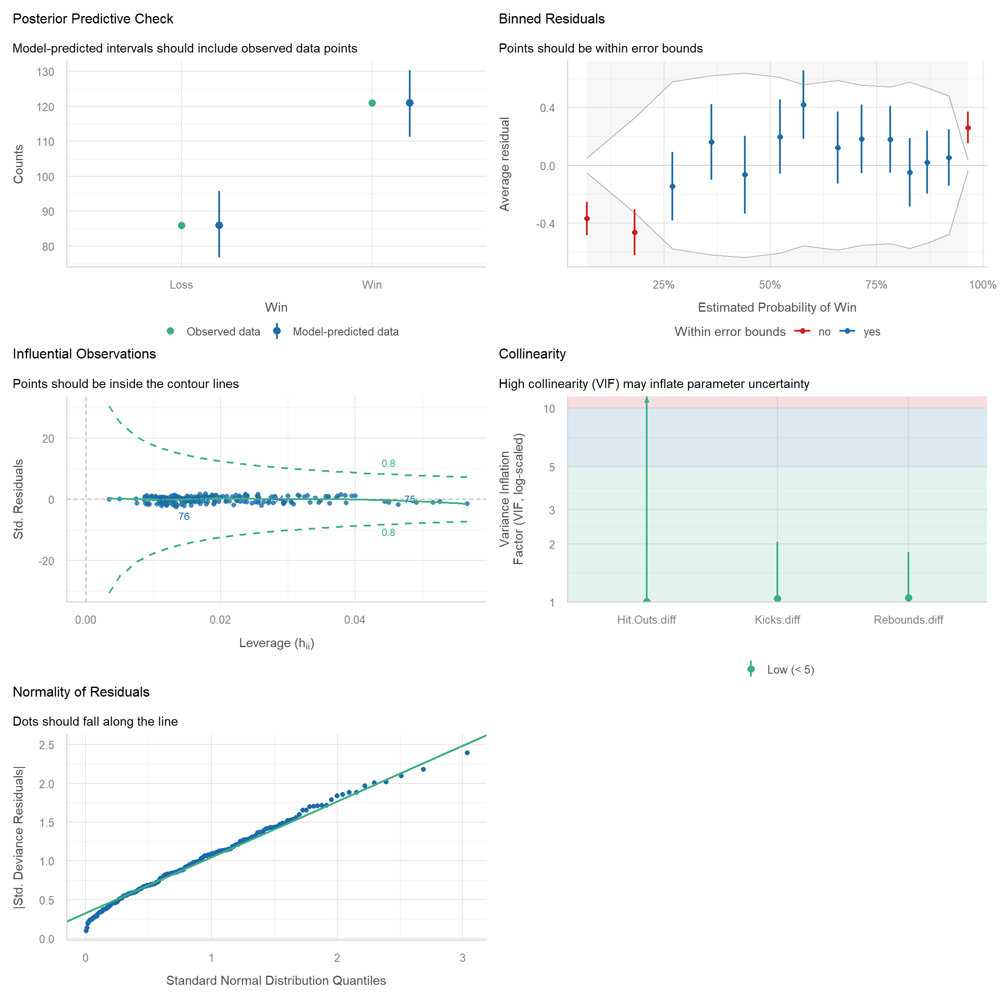
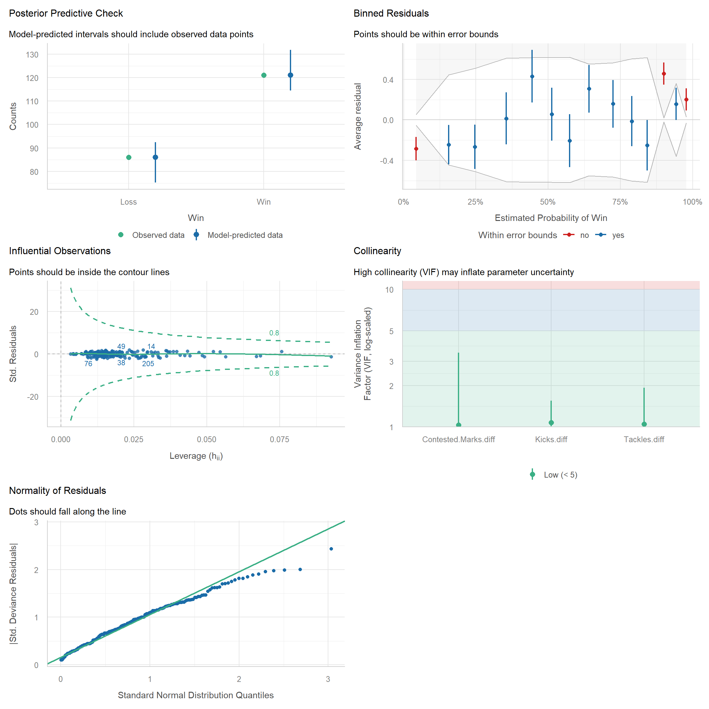

library(dplyr)
library(tidyr)
library(ggplot2)
library(performance)
library(see)
library(patchwork)Week 11
Frequentist Models
Overview
In this tutorial you will use real 2026 AFL match data to ask:
Which team statistics are good predictors of the final margin of a game?
You will build three different models, each with exactly three predictors, and then decide which one you would trust most.
By the end you should be able to:
- Fit a regression model using
glm(). - Write down the fitted regression equation from R output.
- Interpret the coefficients and their confidence intervals in context.
- Check the assumptions of each model using the
performancepackage. - Compare models and justify a final choice.
- Make predictions for new games and judge how well your models predict data they have never seen.
NoteWhy
glm() and not lm()?
For a numeric response like margin, glm() with a Gaussian family gives the same fit as lm(). We use glm() now because next we will move to Poisson and logistic regression, and they all share the same structure. Learning the structure now means only one thing changes later: the family and link.
Setting up the project
1. Load packages
2. Download the data
We have two data sets from the 2026 AFL season:
| Games | Role | CSV |
|---|---|---|
| Regular season (home and away rounds) | Training data: used to build and compare your models | |
| The finals series | Test data: kept aside to see how well your models predict new games |
Each row is one match. In the regular season file, columns starting with Home. and Away. hold the team totals for that game.
WarningDon’t peek at the test data
You will not use the finals data until later. Choosing your variables by looking at the finals results would defeat the purpose of a test set.
3. Load the data
Read the data into R and call the files afl_train and afl_test:
afl_train <- ...
alf_test <- ...Tasks - Part 1 (Linear Regression)
NoteQuestion 1
Explore the data. Pick a few variables and see how they relate to the outcome (Margin).
ImportantClick for solution
You could make summary statistics, figures, etc. Try a few things that you have learnt this semester. As an example:
ggplot(afl_train, aes(Kicks.diff, Margin)) +
geom_point() +
geom_smooth()
NoteQuestion 2
Build a model to predict Margin. For now, you can only include 3 predictors in your model.
# See what the predictors can be
glimpse(afl_train)# Build your first model
model1 <- glm(
formula = Margin ~ ... + ... + ...,
family = ...,
data = ...
)
ImportantClick for solution
Your models will all be different depending on which variables you pick. As an example, suppose you built a model with Kicks, Tackles and Inside50s:
model1 <- glm(
formula = Margin ~ Kicks.diff + Tackles.diff + Inside.50s.diff ,
family = gaussian,
data = afl_train
)
NoteQuestion 3
Inspect your model output with the summary() function. Are the results what you inspected?
summary(...)
ImportantClick for solution
summary(model1)
Call:
glm(formula = Margin ~ Kicks.diff + Tackles.diff + Inside.50s.diff,
family = gaussian, data = afl_train)
Coefficients:
Estimate Std. Error t value Pr(>|t|)
(Intercept) -0.85962 1.98615 -0.433 0.66562
Kicks.diff 0.45670 0.05628 8.115 4.59e-14 ***
Tackles.diff 0.37554 0.13747 2.732 0.00686 **
Inside.50s.diff 1.26000 0.16593 7.593 1.12e-12 ***
---
Signif. codes: 0 '***' 0.001 '**' 0.01 '*' 0.05 '.' 0.1 ' ' 1
(Dispersion parameter for gaussian family taken to be 750.8783)
Null deviance: 343375 on 206 degrees of freedom
Residual deviance: 152428 on 203 degrees of freedom
AIC: 1964
Number of Fisher Scoring iterations: 2
NoteQuestion 4
Use the confint() function to obtain confidence intervals for eahc of your model terms.
confint(...)
ImportantClick for solution
confint(model1) 2.5 % 97.5 %
(Intercept) -4.7524115 3.0331725
Kicks.diff 0.3463967 0.5669989
Tackles.diff 0.1060997 0.6449879
Inside.50s.diff 0.9347805 1.5852246
NoteQuestion 5
We should now check whether the assumptions of your model are met. We can do this with the check_model function from the performance package.
Note: You might want to adjust the fig.width and fig.height for this output, otherwise it is difficult to see anything (setting both to 12 should be okay.)
library(performance)
check_model(...)
ImportantClick for solution
Everyone’s results will be different, here is an example with the model I listed above.
library(performance)
check_model(model1)
NoteQuestion 6
Now build two more models. Both should be trying to predict Margin. Change these so that the models have at least one different predictor in each.
model2 <- glm(
formula = ...,
data = ...,
family = ...
)
model3 <- glm(
formula = ...,
data = ...,
family = ...
)
ImportantClick for solution
Everyone’s results will be different, but here are two examples:
model2 <- glm(
formula = Margin ~ Hit.Outs.diff + Rebounds.diff + Kicks.diff,
data = afl_train,
family = gaussian
)
model3 <- glm(
formula = Margin ~ Contested.Marks.diff + Tackles.diff + Kicks.diff,
data = afl_train,
family = gaussian
)
NoteQuestion 7
Check the assumptions for your two new models.
Note: You might want to adjust the fig.width and fig.height for this output, otherwise it is difficult to see anything (setting both to 12 should be okay.)
check_model(...)
check_model(...)
ImportantClick for solution
Everyone’s results will be different, here is an example with the models I listed above.
check_model(model2)
check_model(model3)
NoteQuestion 8
All three models predict the same response from the same rows of the training data, so we can compare them directly. Note that these are in-sample measures: they describe how well each model fits the games it was built from. You can use the compare_performance() function from the performance package.
compare_performance(..., ..., ..., rank = TRUE)
ImportantClick for solution
Everyone’s results will be different, but here are two examples:
compare_performance(model1,model2,model3, rank = TRUE)# Comparison of Model Performance Indices
Name | Model | R2 | RMSE | Sigma | AIC weights | AICc weights
---------------------------------------------------------------------
model1 | glm | 0.556 | 27.136 | 27.402 | 1.000 | 1.000
model3 | glm | 0.459 | 29.967 | 30.261 | 1.20e-09 | 1.20e-09
model2 | glm | 0.418 | 31.071 | 31.375 | 6.72e-13 | 6.72e-13
Name | BIC weights | Performance-Score
----------------------------------------
model1 | 1.000 | 100.00%
model3 | 1.20e-09 | 14.25%
model2 | 6.72e-13 | 0.00%Here is how to read the main columns:
| Measure | What it tells you | Better is |
|---|---|---|
| AIC / BIC | Fit penalised for complexity. Only differences between models matter. | Lower |
| R2 | Share of the variation in margin the model explains. | Higher |
| RMSE / Sigma | Typical size of the prediction error, in points. | Lower |
Note
Because every model has exactly three predictors, the models have the same complexity, so the AIC and BIC penalties are the same. The comparison is about which three variables carry more useful information.
NoteQuestion 9
Predicting the finals
A model that fits the data it was built from can still predict poorly on new data. The finals series is our chance to find out. For each finals game we know the stat differences, and we use the model to predict the margin.
In the code here we will use the afl_test dataset (which is the final series macthes only). None of these matches were used to train our models (can you suggest what implications it would have if they were?).
We’ll select Round, Home.team, Away.team and we’ll rename Margin to Actual. Then we’ll create new columns called Model1, Model2 and Model3 which will use the predict() function. You can then compare the Actual results to what each Model predicted for each match of the final series!
afl_test |>
select(Round, Home.team, Away.team, Actual = Margin) |>
mutate(
Model1 = predict(..., newdata = ...),
Model2 = predict(..., newdata = ...),
Model3 = predict(..., newdata = ...)
)
ImportantClick for solution
Your answer will be different to mine depending on how you built your models.
afl_test |>
select(Round, Home.team, Away.team, Actual = Margin) |>
mutate(
Model1 = predict(model1, newdata = afl_test),
Model2 = predict(model2, newdata = afl_test),
Model3 = predict(model3, newdata = afl_test)
) Round Home.team Away.team Actual Model1
1 Wildcard Final Western Bulldogs Collingwood 3 26.184982
2 Wildcard Final Melbourne Carlton -19 -27.291507
3 QF Fremantle Hawthorn -32 8.800875
4 EF Geelong Carlton 33 16.898742
5 QF Sydney Brisbane Lions 53 23.910092
6 EF Adelaide Western Bulldogs 22 16.821436
7 SF Fremantle Geelong 14 19.945786
8 SF Brisbane Lions Adelaide 53 41.060897
9 PF Sydney Fremantle -12 -33.515387
10 PF Hawthorn Brisbane Lions -9 -28.728863
11 GF Fremantle Brisbane Lions -7 -2.025347
Model2 Model3
1 22.014384 -1.339707
2 -30.587166 -35.727365
3 11.772991 8.065997
4 15.798930 8.754952
5 1.553723 6.184640
6 55.410843 51.143922
7 8.801885 15.358552
8 34.483564 29.549007
9 -24.652300 -24.589229
10 -27.326809 -13.984804
11 -18.137717 -5.841804Tasks - Part 2 (Logistic Regression)
In Part 1 we predicted the size of the margin. Often we only care about the result:
Which team statistics are good predictors of whether the home team wins?
Now the response is binary (win or loss), so a Gaussian glm() is no longer appropriate. We keep the same glm() structure and change the family and link:
| Part 1 (Linear) | Part 2 (Logistic) | |
|---|---|---|
| Response | Margin (numeric) | Win (1) or Loss (0) |
| Family | gaussian |
binomial |
| Link | identity | logit |
| Model predicts | the mean margin | the log-odds of a home win |
NoteWhat is “Win” here?
We define Win = 1 if the home team’s margin is positive and Win = 0 otherwise. A draw (margin of exactly 0) is therefore counted as a loss. Everything below is about the home team: a “win” means the home team won.
WarningAvoid leaking the answer
Win is calculated from Margin, so neither Margin nor the team scores can be used as predictors. They would “predict” the result perfectly because they are the result. Stick to the match statistics (the .diff variables).
NoteQuestion 1
Create the binary response variable Win in both the training and test data, using Margin. Then check how many games the home team won in the training data.
afl_train <- afl_train |>
mutate(Win = ...)
afl_test <- afl_test |>
mutate(Win = ...)
table(afl_train$Win)What proportion of regular season games were won by the home team? Keep this number in mind, because it gives us a baseline to beat later.
ImportantClick for solution
Begin by making a variable called Win which takes the Margin variable as a reference. If Margin > 0 then Win, otherwise Lose.
afl_train <- afl_train |>
mutate(
Win = case_when(Margin > 0 ~ "Win",
TRUE ~ "Loss"),
Win = factor(Win, levels = c("Loss", "Win"))
)
afl_test <- afl_test |>
mutate(
Win = case_when(Margin > 0 ~ "Win",
TRUE ~ "Loss"),
Win = factor(Win, levels = c("Loss", "Win"))
)
NoteQuestion 2
Explore the data. Pick a few variables and see how they differ between games the home team won and games it did not.
ImportantClick for solution
You could make summary statistics, figures, etc. As an example, compare the distribution of Kicks.diff for wins and losses:
ggplot(afl_train, aes(x = factor(Win, labels = c("Loss", "Win")), y = Kicks.diff)) +
geom_boxplot() +
labs(x = "Home team result", y = "Kicks (home - away)")
If a variable is useful, the two boxes should be shifted relative to each other.
NoteQuestion 3
Build a logistic regression model to predict Win. Again, you can only include 3 predictors. Note the changes from Part 1: the response is Win, and the family is now binomial.
logit1 <- glm(
formula = Win ~ ... + ... + ...,
family = ...,
data = ...
)
ImportantClick for solution
Your models will all be different depending on which variables you pick. As an example, suppose you built a model with Kicks, Tackles and Inside 50s:
logit1 <- glm(
formula = Win ~ Kicks.diff + Tackles.diff + Inside.50s.diff,
family = binomial,
data = afl_train
)
NoteQuestion 4
Inspect your model with summary(), then write down the fitted regression equation. Remember that a logistic regression models the log-odds of a home win, not the probability directly:
\[ \log\left(\frac{p}{1-p}\right) = \beta_0 + \beta_1 x_1 + \beta_2 x_2 + \beta_3 x_3 \]
where \(p\) is the probability that the home team wins.
summary(...)
ImportantClick for solution
summary(logit1)
Call:
glm(formula = Win ~ Kicks.diff + Tackles.diff + Inside.50s.diff,
family = binomial, data = afl_train)
Coefficients:
Estimate Std. Error z value Pr(>|z|)
(Intercept) 0.037881 0.187805 0.202 0.840149
Kicks.diff 0.034676 0.006783 5.112 3.18e-07 ***
Tackles.diff 0.039273 0.013864 2.833 0.004615 **
Inside.50s.diff 0.058597 0.016542 3.542 0.000397 ***
---
Signif. codes: 0 '***' 0.001 '**' 0.01 '*' 0.05 '.' 0.1 ' ' 1
(Dispersion parameter for binomial family taken to be 1)
Null deviance: 281.02 on 206 degrees of freedom
Residual deviance: 186.39 on 203 degrees of freedom
AIC: 194.39
Number of Fisher Scoring iterations: 5Substitute the estimates from the Estimate column into the equation, for example (using your own numbers):
\[ \log\left(\frac{\hat{p}}{1-\hat{p}}\right) = \hat{\beta}_0 + \hat{\beta}_1 \times \text{Kicks.diff} + \hat{\beta}_2 \times \text{Tackles.diff} + \hat{\beta}_3 \times \text{Inside.50s.diff} \]
The intercept is the log-odds of a home win when all the differences are 0 (the two teams are level on every statistic).
NoteQuestion 5
Use confint() to get confidence intervals on the log-odds scale. Then use exp() to convert both the coefficients and the confidence intervals into odds ratios. Interpret each odds ratio in context.
confint(...)
exp(coef(...))
exp(confint(...))
ImportantClick for solution
confint(logit1) 2.5 % 97.5 %
(Intercept) -0.33544729 0.40416812
Kicks.diff 0.02218800 0.04891960
Tackles.diff 0.01284238 0.06747853
Inside.50s.diff 0.02721802 0.09239620exp(coef(logit1)) (Intercept) Kicks.diff Tackles.diff Inside.50s.diff
1.038607 1.035285 1.040054 1.060348 exp(confint(logit1)) 2.5 % 97.5 %
(Intercept) 0.7150182 1.498056
Kicks.diff 1.0224360 1.050136
Tackles.diff 1.0129252 1.069807
Inside.50s.diff 1.0275918 1.096799How to read an odds ratio for a predictor:
- An odds ratio above 1 means that as the variable increases, the odds of a home win increase.
- An odds ratio below 1 means the odds decrease.
- An odds ratio of exactly 1 means no association.
Template for your interpretation: “For each extra [unit] the home team has over the away team in [variable], the odds of a home win are multiplied by [odds ratio] (95% CI: [lower] to [upper]), holding the other variables constant.”
If the confidence interval for an odds ratio contains 1, we cannot rule out that the variable has no effect once the other variables are accounted for.
For variables measured in single units (like kicks), a 1 unit change can be tiny. You can scale the effect to something more meaningful, for example the odds ratio for a 10 kick advantage is exp(10 * coef(logit1)["Kicks.diff"]).
NoteQuestion 6
Check the assumptions of your model with check_model().
Note: Set both fig.width and fig.height to 12 so the plots are readable.
check_model(...)
ImportantClick for solution
check_model(logit1)
The plots are different from Part 1, because some of the linear regression assumptions (normal residuals, constant variance) do not apply to a binary response. The ones that matter here:
- Binned residuals: the residuals are grouped into bins. Most points should sit inside the error bounds. Many points outside suggest the model is missing structure (for example a non-linear effect).
- Collinearity (VIF): low values mean the predictors are not too strongly related to each other.
- Influential observations: no single game should be driving the fit.
Two assumptions are not shown but still matter: the games are independent of each other, and each predictor has a linear relationship with the log-odds of a win.
NoteQuestion 7
Now build two more logistic regression models, and check their assumptions. Change these so that the models have at least one different predictor in each.
logit2 <- glm(
formula = ...,
data = ...,
family = ...
)
logit3 <- glm(
formula = ...,
data = ...,
family = ...
)
check_model(...)
check_model(...)
ImportantClick for solution
Everyone’s results will be different, but here are two examples:
logit2 <- glm(
formula = Win ~ Hit.Outs.diff + Rebounds.diff + Kicks.diff,
data = afl_train,
family = binomial
)
logit3 <- glm(
formula = Win ~ Contested.Marks.diff + Tackles.diff + Kicks.diff,
data = afl_train,
family = binomial
)check_model(logit2)
check_model(logit3)
NoteQuestion 8
Compare your three models with compare_performance(). As in Part 1, these are in-sample measures.
compare_performance(..., ..., ..., rank = TRUE)
ImportantClick for solution
compare_performance(logit1, logit2, logit3, rank = TRUE)# Comparison of Model Performance Indices
Name | Model | Tjur's R2 | RMSE | Sigma | Log_loss | Score_log
-----------------------------------------------------------------
logit1 | glm | 0.395 | 0.384 | 1 | 0.450 | -158.643
logit3 | glm | 0.342 | 0.401 | 1 | 0.478 | -153.128
logit2 | glm | 0.310 | 0.410 | 1 | 0.503 | -143.283
Name | Score_spherical | PCP | AIC weights | AICc weights | BIC weights | Performance-Score
-----------------------------------------------------------------------------------------------
logit1 | 0.010 | 0.706 | 0.997 | 0.997 | 0.997 | 77.78%
logit3 | 0.009 | 0.681 | 0.003 | 0.003 | 0.003 | 27.16%
logit2 | 0.008 | 0.665 | 1.62e-05 | 1.62e-05 | 1.62e-05 | 22.22%Here is how to read the main columns:
| Measure | What it tells you | Better is |
|---|---|---|
| AIC / BIC | Fit penalised for complexity. Only differences between models matter. | Lower |
| Tjur’s R2 | A pseudo R2 for binary data: the average predicted probability for wins minus the average for losses. | Higher |
| Log loss | Penalises confident predictions that turn out to be wrong. | Lower |
| PCP | Percentage of correct predictions, based on the predicted probabilities. | Higher |
Note
The ordinary R2 and RMSE from Part 1 are not the right tools for a binary response. Tjur’s R2 is usually much smaller than a linear regression R2, so do not judge it against the same scale.
NoteQuestion 9
Predicted probabilities and the confusion matrix
A logistic regression does not directly predict a win or a loss. It predicts the probability of a home win. To turn this into a prediction we need a classification threshold: if the predicted probability is above the threshold we predict a win, otherwise a loss. We will start with the usual threshold of 0.5.
Part (a): Use predict() with type = "response" to get the predicted probability of a home win for each game in the training data, using logit1. Then classify each game as a predicted win or loss.
Part (b): Build a confusion matrix by cross-tabulating the predicted result against the actual result.
afl_train <- afl_train |>
mutate(
Prob1 = predict(..., type = "response"),
Pred1 = ifelse(Prob1 > ..., "Win", "Loss"),
Actual = ifelse(Win == 1, "Win", "Loss")
)
table(Predicted = afl_train$Pred1, Actual = afl_train$Actual)
ImportantClick for solution
results <- afl_test |>
select(Round, Home.team, Away.team, Actual = Win) |>
mutate(
Model1 = predict(logit1, newdata = afl_test, type = 'response'),
Model2 = predict(logit2, newdata = afl_test, type = 'response'),
Model3 = predict(logit3, newdata = afl_test, type = 'response')
) |>
# Change the probabilities to Win/Loss based on a threshold of 0.50.
mutate(
Model1 = ifelse(Model1<0.5,"Loss","Win"),
Model2 = ifelse(Model1<0.5,"Loss","Win"),
Model3 = ifelse(Model1<0.5,"Loss","Win")
)
table(Actual = results$Actual,
Model1 = results$Model1) Model1
Actual Loss Win
Loss 4 1
Win 0 6table(Actual = results$Actual,
Model2 = results$Model2) Model2
Actual Win
Loss 5
Win 6table(Actual = results$Actual,
Model3 = results$Model3) Model3
Actual Win
Loss 5
Win 6Without type = "response", predict() returns values on the log-odds scale, which are not probabilities.
The four cells of the matrix (we treat a home win as the “positive” class):
| Actual: Win | Actual: Loss | |
|---|---|---|
| Predicted: Win | True positive (TP) | False positive (FP) |
| Predicted: Loss | False negative (FN) | True negative (TN) |
The correct predictions are on the diagonal. The off-diagonal cells are the two kinds of mistakes: predicting a win that did not happen (FP), and missing a win that did happen (FN).
NoteQuestion 10
Classification metrics
Using the four counts from your confusion matrix, calculate these metrics by hand (or in R as simple arithmetic):
| Metric | Formula | In words |
|---|---|---|
| Accuracy | (TP + TN) / (TP + TN + FP + FN) | Proportion of all games predicted correctly |
| Sensitivity (recall) | TP / (TP + FN) | Of the games the home team won, the proportion we correctly predicted |
| Specificity | TN / (TN + FP) | Of the games the home team did not win, the proportion we correctly predicted |
| Precision | TP / (TP + FP) | Of the games we predicted as wins, the proportion that really were |
| F1 score | 2 × Precision × Sensitivity / (Precision + Sensitivity) | A single number balancing precision and sensitivity |
Then answer:
- Is the accuracy better than the baseline from Question 1 (always predicting a home win)?
- Is the model better at identifying wins or at identifying losses? Which metrics tell you this?
- In the context of tipping footy games, is a false positive any worse than a false negative?
TP <- ...
TN <- ...
FP <- ...
FN <- ...
accuracy <- ...
sensitivity <- ...
specificity <- ...
precision <- ...
f1 <- ...
ImportantClick for solution
To avoid copying numbers by hand, we can pull them straight from the table. Note if your code does not run, it might be because there are two few games in the test set (and it can’t divide by zero). If this is the case, skip to the next questions.
cm1 <- table(
Predicted = factor(afl_train$Pred1, levels = c("Loss", "Win")),
Actual = factor(afl_train$Actual, levels = c("Loss", "Win"))
)
cm1
TP <- cm1["Win", "Win"]
TN <- cm1["Loss", "Loss"]
FP <- cm1["Win", "Loss"]
FN <- cm1["Loss", "Win"]
accuracy <- (TP + TN) / (TP + TN + FP + FN)
sensitivity <- TP / (TP + FN)
specificity <- TN / (TN + FP)
precision <- TP / (TP + FP)
f1 <- 2 * precision * sensitivity / (precision + sensitivity)
c(Accuracy = accuracy, Sensitivity = sensitivity, Specificity = specificity,
Precision = precision, F1 = f1)Setting the levels in factor() guarantees both “Loss” and “Win” appear in the table, even if a model never predicts one of them.
Compare the accuracy to max(mean(afl_train$Win), 1 - mean(afl_train$Win)), the accuracy of always predicting the more common result. If the model barely beats it, the three predictors are not adding much.
For (c), think about what each mistake costs you. When tipping, a wrong tip is a wrong tip either way, so the two errors cost the same. In other settings (for example a medical test) they might not.
NoteQuestion 11
Calculating the metrics by hand for every model gets repetitive. Here are two helper functions that do it for you. Use them to compare the metrics for all three models on the training data.
# Builds a confusion matrix from the actual result (1/0) and predicted probabilities
conf_mat <- function(actual, prob, threshold = 0.5) {
table(
Predicted = factor(ifelse(prob > threshold, "Win", "Loss"), levels = c("Loss", "Win")),
Actual = factor(ifelse(actual == 1, "Win", "Loss"), levels = c("Loss", "Win"))
)
}
# Calculates the classification metrics from a confusion matrix
class_metrics <- function(cm) {
TP <- cm["Win", "Win"]; TN <- cm["Loss", "Loss"]
FP <- cm["Win", "Loss"]; FN <- cm["Loss", "Win"]
precision <- TP / (TP + FP)
sensitivity <- TP / (TP + FN)
data.frame(
Accuracy = (TP + TN) / sum(cm),
Sensitivity = sensitivity,
Specificity = TN / (TN + FP),
Precision = precision,
F1 = 2 * precision * sensitivity / (precision + sensitivity)
)
}afl_train <- afl_train |>
mutate(
Prob2 = predict(..., type = "response"),
Prob3 = predict(..., type = "response")
)
bind_rows(
class_metrics(conf_mat(afl_train$Win, afl_train$Prob1)) |> mutate(Model = "Model 1"),
...
)Which model would you choose based on these metrics? Does it agree with compare_performance() from Question 8?
ImportantClick for solution
afl_train <- afl_train |>
mutate(
Prob2 = predict(logit2, type = "response"),
Prob3 = predict(logit3, type = "response")
)
bind_rows(
class_metrics(conf_mat(afl_train$Win, afl_train$Prob1)) |> mutate(Model = "Model 1"),
class_metrics(conf_mat(afl_train$Win, afl_train$Prob2)) |> mutate(Model = "Model 2"),
class_metrics(conf_mat(afl_train$Win, afl_train$Prob3)) |> mutate(Model = "Model 3")
) |>
relocate(Model)Remember these metrics all depend on the 0.5 threshold, and they are still in-sample.
NoteQuestion 12
Predicting the finals
Now the real test. Use each model to predict the probability of a home win for each finals game, then classify each game using a threshold of 0.5. As before, the finals games were not used to build the models.
We’ll select Round, Home.team and Away.team, and rename Win to Actual. Then we’ll create Prob1, Prob2 and Prob3 using predict() with type = "response", and a column for each model’s predicted result.
finals_pred <- afl_test |>
select(Round, Home.team, Away.team, Actual = Win) |>
mutate(
Prob1 = predict(..., newdata = ..., type = "response"),
Prob2 = predict(..., newdata = ..., type = "response"),
Prob3 = predict(..., newdata = ..., type = "response"),
Pred1 = as.integer(Prob1 > 0.5),
Pred2 = as.integer(Prob2 > 0.5),
Pred3 = as.integer(Prob3 > 0.5)
)
finals_pred
ImportantClick for solution
finals_pred <- afl_test |>
select(Round, Home.team, Away.team, Actual = Win) |>
mutate(
Prob1 = predict(logit1, newdata = afl_test, type = "response"),
Prob2 = predict(logit2, newdata = afl_test, type = "response"),
Prob3 = predict(logit3, newdata = afl_test, type = "response"),
Pred1 = as.integer(Prob1 > 0.5),
Pred2 = as.integer(Prob2 > 0.5),
Pred3 = as.integer(Prob3 > 0.5)
)
finals_pred Round Home.team Away.team Actual Prob1 Prob2
1 Wildcard Final Western Bulldogs Collingwood Win 0.7496004 0.7751982
2 Wildcard Final Melbourne Carlton Loss 0.1466632 0.1428074
3 QF Fremantle Hawthorn Loss 0.6111449 0.6727617
4 EF Geelong Carlton Win 0.6971557 0.7254327
5 QF Sydney Brisbane Lions Win 0.8099579 0.5224539
6 EF Adelaide Western Bulldogs Win 0.8624770 0.9748825
7 SF Fremantle Geelong Win 0.7816844 0.6291776
8 SF Brisbane Lions Adelaide Win 0.9266827 0.8894089
9 PF Sydney Fremantle Loss 0.1676770 0.2110664
10 PF Hawthorn Brisbane Lions Loss 0.1448413 0.1752541
11 GF Fremantle Brisbane Lions Loss 0.3638022 0.2386461
Prob3 Pred1 Pred2 Pred3
1 0.4708716 1 1 0
2 0.1104710 0 0 0
3 0.5966302 1 1 1
4 0.6055850 1 1 1
5 0.6525506 1 1 1
6 0.9673215 1 1 1
7 0.7309651 1 1 1
8 0.8810070 1 1 1
9 0.2555895 0 0 0
10 0.2367950 0 0 0
11 0.2921454 0 0 0Look at the games where Pred and Actual disagree. Were these games where the model was unsure (probability near 0.5) or confidently wrong (probability near 0 or 1)?
NoteQuestion 13
Confusion matrices on the test data
Build a confusion matrix for each of your three models using the finals games, then calculate the classification metrics.
- How do the test metrics compare to the training metrics from Question 11?
- The finals series only has a handful of games. How does this affect how much we should trust the test metrics?
- In the finals, the “home” team is not always a true home team. Does this matter for how we interpret the model?
conf_mat(afl_test$Win, finals_pred$Prob1)
bind_rows(
class_metrics(conf_mat(afl_test$Win, finals_pred$Prob1)) |> mutate(Model = "Model 1"),
...
)
ImportantClick for solution
conf_mat(afl_test$Win, finals_pred$Prob1) Actual
Predicted Loss Win
Loss 4 0
Win 7 0conf_mat(afl_test$Win, finals_pred$Prob2) Actual
Predicted Loss Win
Loss 4 0
Win 7 0conf_mat(afl_test$Win, finals_pred$Prob3) Actual
Predicted Loss Win
Loss 5 0
Win 6 0bind_rows(
class_metrics(conf_mat(afl_test$Win, finals_pred$Prob1)) |> mutate(Model = "Model 1"),
class_metrics(conf_mat(afl_test$Win, finals_pred$Prob2)) |> mutate(Model = "Model 2"),
class_metrics(conf_mat(afl_test$Win, finals_pred$Prob3)) |> mutate(Model = "Model 3")
) |>
relocate(Model) Model Accuracy Sensitivity Specificity Precision F1
1 Model 1 0.3636364 NaN 0.3636364 0 NaN
2 Model 2 0.3636364 NaN 0.3636364 0 NaN
3 Model 3 0.4545455 NaN 0.4545455 0 NaNSome things to discuss:
- Models usually perform worse on new data than on the data they were built from. A large drop suggests the model overfit the training data.
- With only a few games, one game changing result moves the accuracy by a large amount, and some metrics may be undefined (for example precision is
NaNif a model never predicts a win). Treat these numbers as rough evidence, not a definitive ranking. - Finals are played at neutral or non-traditional venues, so “home” is often just a label. If there is no real home advantage in these games, the intercept learned from the regular season may not transfer perfectly.
NoteQuestion 14
Choosing a final model
Which of your three logistic regression models would you trust most to predict a game that has not yet been played? Justify your choice using at least three pieces of evidence from this tutorial (for example: assumption checks, compare_performance(), the confusion matrix metrics, the AUC, and the finals predictions).
ImportantClick for solution
There is no single correct model. A strong answer:
- Uses both in-sample evidence (AIC/BIC, Tjur’s R2, AUC) and out-of-sample evidence (finals accuracy, sensitivity, specificity).
- Mentions whether the assumption checks raised any concerns (such as influential games or collinearity between predictors).
- Compares the accuracy to the baseline of always predicting a home win.
- Acknowledges the small size of the test set and the choice of threshold.
- Notes whether the odds ratios make sense in the context of football (for example more tackles for the home team might be linked to a lower chance of winning, because the team without the ball tackles more).